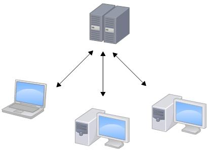

为什么要编写这个教程？因为我在学习Git的过程中，买过书，也在网上Google了一堆Git相关的文章和教程，但令人失望的是，这些教程不是难得令人发指，就是简单得一笔带过，或者，只支离破碎地介绍Git的某几个命令，还有直接从Git手册粘贴帮助文档的，总之，初学者很难找到一个由浅入深，学完后能立刻上手的Git教程。
既然号称史上最浅显易懂的Git教程，那这个教程有什么让你怦然心动的特点呢？
首先，本教程绝对面向初学者，没有接触过版本控制概念的读者也可以轻松入门，不必担心起步难度；
其次，本教程实用性超强，边学边练，一点也不觉得枯燥。而且，你所学的Git命令是“充分且必要”的，掌握了这些东西，你就可以通过Git轻松地完成你的工作。
本教程只会让你成为Git用户，不会让你成为Git专家。很多Git命令只有那些专家才明白（事实上我也不明白，因为我不是Git专家），但我保证这些命令可能你一辈子都不会用到。既然Git是一个工具，就没必要把时间浪费在那些“高级”但几乎永远不会用到的命令上。一旦你真的非用不可了，到时候再自行Google或者请教专家也未迟。
如果你是一个开发人员，想用上这个世界上目前最先进的分布式版本控制系统，那么，赶快开始学习吧！
Git是什么？
Git是目前世界上最先进的分布式版本控制系统（没有之一）。
Git有什么特点？简单来说就是：高端大气上档次！
那什么是版本控制系统？
如果你用Microsoft Word写过长篇大论，那你一定有这样的经历：
想删除一个段落，又怕将来想恢复找不回来怎么办？有办法，先把当前文件“另存为……”一个新的Word文件，再接着改，改到一定程度，再“另存为……”一个新文件，这样一直改下去，最后你的Word文档变成了这样：
过了一周，你想找回被删除的文字，但是已经记不清删除前保存在哪个文件里了，只好一个一个文件去找，真麻烦。
看着一堆乱七八糟的文件，想保留最新的一个，然后把其他的删掉，又怕哪天会用上，还不敢删，真郁闷。
更要命的是，有些部分需要你的财务同事帮助填写，于是你把文件Copy到U盘里给她（也可能通过Email发送一份给她），然后，你继续修改Word文件。一天后，同事再把Word文件传给你，此时，你必须想想，发给她之后到你收到她的文件期间，你作了哪些改动，得把你的改动和她的部分合并，真困难。
于是你想，如果有一个软件，不但能自动帮我记录每次文件的改动，还可以让同事协作编辑，这样就不用自己管理一堆类似的文件了，也不需要把文件传来传去。如果想查看某次改动，只需要在软件里瞄一眼就可以，岂不是很方便？
这个软件用起来就应该像这个样子，能记录每次文件的改动：
|
版本 |
用户 |
说明 |
日期 |
|
1 |
张三 |
删除了软件服务条款5 |
7/12 10:38 |
|
2 |
张三 |
增加了License人数限制 |
7/12 18:09 |
|
3 |
李四 |
财务部门调整了合同金额 |
7/13 9:51 |
|
4 |
张三 |
延长了免费升级周期 |
7/14 15:17 |
这样，你就结束了手动管理多个“版本”的史前时代，进入到版本控制的20世纪。
很多人都知道，Linus在1991年创建了开源的Linux，从此，Linux系统不断发展，已经成为最大的服务器系统软件了。
Linus虽然创建了Linux，但Linux的壮大是靠全世界热心的志愿者参与的，这么多人在世界各地为Linux编写代码，那Linux的代码是如何管理的呢？
事实是，在2002年以前，世界各地的志愿者把源代码文件通过diff的方式发给Linus，然后由Linus本人通过手工方式合并代码！
你也许会想，为什么Linus不把Linux代码放到版本控制系统里呢？不是有CVS、SVN这些免费的版本控制系统吗？因为Linus坚定地反对CVS和SVN，这些集中式的版本控制系统不但速度慢，而且必须联网才能使用。有一些商用的版本控制系统，虽然比CVS、SVN好用，但那是付费的，和Linux的开源精神不符。
不过，到了2002年，Linux系统已经发展了十年了，代码库之大让Linus很难继续通过手工方式管理了，社区的弟兄们也对这种方式表达了强烈不满，于是Linus选择了一个商业的版本控制系统BitKeeper，BitKeeper的东家BitMover公司出于人道主义精神，授权Linux社区免费使用这个版本控制系统。
安定团结的大好局面在2005年就被打破了，原因是Linux社区牛人聚集，不免沾染了一些梁山好汉的江湖习气。开发Samba的Andrew试图破解BitKeeper的协议（这么干的其实也不只他一个），被BitMover公司发现了（监控工作做得不错！），于是BitMover公司怒了，要收回Linux社区的免费使用权。
Linus可以向BitMover公司道个歉，保证以后严格管教弟兄们，嗯，这是不可能的。实际情况是这样的：
Linus花了两周时间自己用C写了一个分布式版本控制系统，这就是Git！一个月之内，Linux系统的源码已经由Git管理了！牛是怎么定义的呢？大家可以体会一下。
Git迅速成为最流行的分布式版本控制系统，尤其是2008年，GitHub网站上线了，它为开源项目免费提供Git存储，无数开源项目开始迁移至GitHub，包括jQuery，PHP，Ruby等等。
历史就是这么偶然，如果不是当年BitMover公司威胁Linux社区，可能现在我们就没有免费而超级好用的Git了。
Linus一直痛恨的CVS及SVN都是集中式的版本控制系统，而Git是分布式版本控制系统，集中式和分布式版本控制系统有什么区别呢？
先说集中式版本控制系统，版本库是集中存放在中央服务器的，而干活的时候，用的都是自己的电脑，所以要先从中央服务器取得最新的版本，然后开始干
活，干完活了，再把自己的活推送给中央服务器。中央服务器就好比是一个图书馆，你要改一本书，必须先从图书馆借出来，然后回到家自己改，改完了，再放回图
书馆。

集中式版本控制系统最大的毛病就是必须联网才能工作，如果在局域网内还好，带宽够大，速度够快，可如果在互联网上，遇到网速慢的话，可能提交一个10M的文件就需要5分钟，这还不得把人给憋死啊。
那分布式版本控制系统与集中式版本控制系统有何不同呢？首先，分布式版本控制系统根本没有“中央服务器”，每个人的电脑上都是一个完整的版本库，这样，你工作的时候，就不需要联网了，因为版本库就在你自己的电脑上。既然每个人电脑上都有一个完整的版本库，那多个人如何协作呢？比方说你在自己电脑上改了文件A，你的同事也在他的电脑上改了文件A，这时，你们俩之间只需把各自的修改推送给对方，就可以互相看到对方的修改了。
和集中式版本控制系统相比，分布式版本控制系统的安全性要高很多，因为每个人电脑里都有完整的版本库，某一个人的电脑坏掉了不要紧，随便从其他人那里复制一个就可以了。而集中式版本控制系统的中央服务器要是出了问题，所有人都没法干活了。
在实际使用分布式版本控制系统的时候，其实很少在两人之间的电脑上推送版本库的修改，因为可能你们俩不在一个局域网内，两台电脑互相访问不了，也可能今天你的同事病了，他的电脑压根没有开机。因此，分布式版本控制系统通常也有一台充当“中央服务器”的电脑，但这个服务器的作用仅仅是用来方便“交换”大家的修改，没有它大家也一样干活，只是交换修改不方便而已。

当然，Git的优势不单是不必联网这么简单，后面我们还会看到Git极其强大的分支管理，把SVN等远远抛在了后面。
CVS作为最早的开源而且免费的集中式版本控制系统，直到现在还有不少人在用。由于CVS自身设计的问题，会造成提交文件不完整，版本库莫名其妙损坏的情况。同样是开源而且免费的SVN修正了CVS的一些稳定性问题，是目前用得最多的集中式版本库控制系统。
除了免费的外，还有收费的集中式版本控制系统，比如IBM的ClearCase（以前是Rational公司的，被IBM收购了），特点是安装比Windows还大，运行比蜗牛还慢，能用ClearCase的一般是世界500强，他们有个共同的特点是财大气粗，或者人傻钱多。
微软自己也有一个集中式版本控制系统叫VSS，集成在Visual
Studio中。由于其反人类的设计，连微软自己都不好意思用了。
分布式版本控制系统除了Git以及促使Git诞生的BitKeeper外，还有类似Git的Mercurial和Bazaar等。这些分布式版本控制系统各有特点，但最快、最简单也最流行的依然是Git！
最早Git是在Linux上开发的，很长一段时间内，Git也只能在Linux和Unix系统上跑。不过，慢慢地有人把它移植到了Windows上。现在，Git可以在Linux、Unix、Mac和Windows这几大平台上正常运行了。
要使用Git，第一步当然是安装Git了。根据你当前使用的平台来阅读下面的文字：
首先，你可以试着输入git，看看系统有没有安装Git：
$ git
The program 'git' is currently not installed. You can
install it by typing:
sudo apt-get install git
像上面的命令，有很多Linux会友好地告诉你Git没有安装，还会告诉你如何安装Git。
如果你碰巧用Debian或Ubuntu Linux，通过一条sudo apt-get install git就可以直接完成Git的安装，非常简单。
老一点的Debian或Ubuntu Linux，要把命令改为sudo apt-get install git-core，因为以前有个软件也叫GIT（GNU Interactive Tools），结果Git就只能叫git-core了。由于Git名气实在太大，后来就把GNU Interactive Tools改成gnuit，git-core正式改为git。
如果是其他Linux版本，可以直接通过源码安装。先从Git官网下载源码，然后解压，依次输入：./config，make，sudo
make install这几个命令安装就好了。
如果你正在使用Mac做开发，有两种安装Git的方法。
一是安装homebrew，然后通过homebrew安装Git，具体方法请参考homebrew的文档：http://brew.sh/。
第二种方法更简单，也是推荐的方法，就是直接从AppStore安装Xcode，Xcode集成了Git，不过默认没有安装，你需要运行Xcode，选择菜单“Xcode”->“Preferences”，在弹出窗口中找到“Downloads”，选择“Command Line Tools”，点“Install”就可以完成安装了。

Xcode是Apple官方IDE，功能非常强大，是开发Mac和iOS App的必选装备，而且是免费的！
实话实说，Windows是最烂的开发平台，如果不是开发Windows游戏或者在IE里调试页面，一般不推荐用Windows。不过，既然已经上了微软的贼船，也是有办法安装Git的。
Windows下要使用很多Linux/Unix的工具时，需要Cygwin这样的模拟环境，Git也一样。Cygwin的安装和配置都比较复杂，就不建议你折腾了。不过，有高人已经把模拟环境和Git都打包好了，名叫msysgit，只需要下载一个单独的exe安装程序，其他什么也不用装，绝对好用。
msysgit是Windows版的Git，从https://git-for-windows.github.io下载（网速慢的同学请移步国内镜像），然后按默认选项安装即可。
安装完成后，在开始菜单里找到“Git”->“Git Bash”，蹦出一个类似命令行窗口的东西，就说明Git安装成功！

安装完成后，还需要最后一步设置，在命令行输入：
$ git config --global user.name "Your Name"
$ git config --global user.email
"email@example.com"
因为Git是分布式版本控制系统，所以，每个机器都必须自报家门：你的名字和Email地址。你也许会担心，如果有人故意冒充别人怎么办？这个不必担心，首先我们相信大家都是善良无知的群众，其次，真的有冒充的也是有办法可查的。
注意git config命令的--global参数，用了这个参数，表示你这台机器上所有的Git仓库都会使用这个配置，当然也可以对某个仓库指定不同的用户名和Email地址。
什么是版本库呢？版本库又名仓库，英文名repository，你可以简单理解成一个目录，这个目录里面的所有文件都可以被Git管理起来，每个文件的修改、删除，Git都能跟踪，以便任何时刻都可以追踪历史，或者在将来某个时刻可以“还原”。
所以，创建一个版本库非常简单，首先，选择一个合适的地方，创建一个空目录：
$ mkdir learngit$ cd learngit$ pwd/Users/michael/learngit
pwd命令用于显示当前目录。在我的Mac上，这个仓库位于/Users/michael/learngit。
如果你使用Windows系统，为了避免遇到各种莫名其妙的问题，请确保目录名（包括父目录）不包含中文。
第二步，通过git init命令把这个目录变成Git可以管理的仓库：
$ git initInitializedemptyGitrepositoryin/Users/michael/learngit/.git/
瞬间Git就把仓库建好了，而且告诉你是一个空的仓库（empty Git
repository），细心的读者可以发现当前目录下多了一个.git的目录，这个目录是Git来跟踪管理版本库的，没事千万不要手动修改这个目录里面的文件，不然改乱了，就把Git仓库给破坏了。
如果你没有看到.git目录，那是因为这个目录默认是隐藏的，用ls -ah命令就可以看见。
也不一定必须在空目录下创建Git仓库，选择一个已经有东西的目录也是可以的。不过，不建议你使用自己正在开发的公司项目来学习Git，否则造成的一切后果概不负责。
首先这里再明确一下，所有的版本控制系统，其实只能跟踪文本文件的改动，比如TXT文件，网页，所有的程序代码等等，Git也不例外。版本控制系统可以告诉你每次的改动，比如在第5行加了一个单词“Linux”，在第8行删了一个单词“Windows”。而图片、视频这些二进制文件，虽然也能由版本控制系统管理，但没法跟踪文件的变化，只能把二进制文件每次改动串起来，也就是只知道图片从100KB改成了120KB，但到底改了啥，版本控制系统不知道，也没法知道。
不幸的是，Microsoft的Word格式是二进制格式，因此，版本控制系统是没法跟踪Word文件的改动的，前面我们举的例子只是为了演示，如果要真正使用版本控制系统，就要以纯文本方式编写文件。
因为文本是有编码的，比如中文有常用的GBK编码，日文有Shift_JIS编码，如果没有历史遗留问题，强烈建议使用标准的UTF-8编码，所有语言使用同一种编码，既没有冲突，又被所有平台所支持。
使用Windows的童鞋要特别注意：
千万不要使用Windows自带的记事本编辑任何文本文件。原因是Microsoft开发记事本的团队使用了一个非常弱智的行为来保存UTF-8编码的文件，他们自作聪明地在每个文件开头添加了0xefbbbf（十六进制）的字符，你会遇到很多不可思议的问题，比如，网页第一行可能会显示一个“?”，明明正确的程序一编译就报语法错误，等等，都是由记事本的弱智行为带来的。建议你下载Notepad++代替记事本，不但功能强大，而且免费！记得把Notepad++的默认编码设置为UTF-8 without BOM即可：

言归正传，现在我们编写一个readme.txt文件，内容如下：
Gitisa version control system.
Gitisfree software.
一定要放到learngit目录下（子目录也行），因为这是一个Git仓库，放到其他地方Git再厉害也找不到这个文件。
和把大象放到冰箱需要3步相比，把一个文件放到Git仓库只需要两步。
第一步，用命令git add告诉Git，把文件添加到仓库：
$ git add readme.txt
执行上面的命令，没有任何显示，这就对了，Unix的哲学是“没有消息就是好消息”，说明添加成功。
第二步，用命令git commit告诉Git，把文件提交到仓库：
$ gitcommit -m "wrote a readme file"
[master (root-commit) cb926e7] wrote a readme file
1 file changed, 2 insertions(+)
create mode 100644 readme.txt
简单解释一下git commit命令，-m后面输入的是本次提交的说明，可以输入任意内容，当然最好是有意义的，这样你就能从历史记录里方便地找到改动记录。
嫌麻烦不想输入-m "xxx"行不行？确实有办法可以这么干，但是强烈不建议你这么干，因为输入说明对自己对别人阅读都很重要。实在不想输入说明的童鞋请自行Google，我不告诉你这个参数。
git commit命令执行成功后会告诉你，1个文件被改动（我们新添加的readme.txt文件），插入了两行内容（readme.txt有两行内容）。
为什么Git添加文件需要add，commit一共两步呢？因为commit可以一次提交很多文件，所以你可以多次add不同的文件，比如：
$ git add file1.txt$ git add file2.txt file3.txt$git commit -m"add 3 files."
现在总结一下今天学的两点内容：
初始化一个Git仓库，使用git init命令。
添加文件到Git仓库，分两步：
·
第一步，使用命令git add
<file>，注意，可反复多次使用，添加多个文件；
·
第二步，使用命令git commit，完成。
我们已经成功地添加并提交了一个readme.txt文件，现在，是时候继续工作了，于是，我们继续修改readme.txt文件，改成如下内容：
Gitisa distributed version control system.
Gitisfree software.
现在，运行git status命令看看结果：
$ git status# On branch master# Changes not staged for commit:# (use "git add <file>..." to update what will be committed)# (use "git checkout -- <file>..." to discard changes in working directory)## modified: readme.txt#no changes added to commit (use"git add"and/or"git commit -a")
git status命令可以让我们时刻掌握仓库当前的状态，上面的命令告诉我们，readme.txt被修改过了，但还没有准备提交的修改。
虽然Git告诉我们readme.txt被修改了，但如果能看看具体修改了什么内容，自然是很好的。比如你休假两周从国外回来，第一天上班时，已经记不清上次怎么修改的readme.txt，所以，需要用git diff这个命令看看：
$ git diff readme.txt diff --git a/readme.txt b/readme.txtindex46d49bf..9247db6100644
--- a/readme.txt+++ b/readme.txt@@ -1,2 +1,2 @@-Gitisa version control system.
+Gitisa distributed version control system.
Gitisfree software.
git diff顾名思义就是查看difference，显示的格式正是Unix通用的diff格式，可以从上面的命令输出看到，我们在第一行添加了一个“distributed”单词。
知道了对readme.txt作了什么修改后，再把它提交到仓库就放心多了，提交修改和提交新文件是一样的两步，第一步是git add：
$ git add readme.txt
同样没有任何输出。在执行第二步git commit之前，我们再运行git status看看当前仓库的状态：
$ git status# On branch master# Changes to be committed:# (use "git reset HEAD <file>..." to unstage)## modified: readme.txt#
git status告诉我们，将要被提交的修改包括readme.txt，下一步，就可以放心地提交了：
$ gitcommit -m "add distributed"
[master ea34578] add distributed
1 file changed, 1 insertion(+), 1 deletion(-)
提交后，我们再用git status命令看看仓库的当前状态：
$ git status# On branch masternothing to commit (working directory clean)Git告诉我们当前没有需要提交的修改，而且，工作目录是干净（working
directory clean）的。
·
要随时掌握工作区的状态，使用git status命令。
·
如果git status告诉你有文件被修改过，用git diff可以查看修改内容。
现在，你已经学会了修改文件，然后把修改提交到Git版本库，现在，再练习一次，修改readme.txt文件如下：
Gitisa distributed version control system.
Gitisfree software distributed under the GPL.
然后尝试提交：
$ git add readme.txt$git commit -m"append GPL"
[master3628164] appendGPL
1file changed,1insertion(+),1deletion(-)
像这样，你不断对文件进行修改，然后不断提交修改到版本库里，就好比玩RPG游戏时，每通过一关就会自动把游戏状态存盘，如果某一关没过去，你还可以选择读取前一关的状态。有些时候，在打Boss之前，你会手动存盘，以便万一打Boss失败了，可以从最近的地方重新开始。Git也是一样，每当你觉得文件修改到一定程度的时候，就可以“保存一个快照”，这个快照在Git中被称为commit。一旦你把文件改乱了，或者误删了文件，还可以从最近的一个commit恢复，然后继续工作，而不是把几个月的工作成果全部丢失。
现在，我们回顾一下readme.txt文件一共有几个版本被提交到Git仓库里了：
版本1：wrote a readme file
Gitisa version control system.
Gitisfree software.
版本2：add distributed
Gitisa distributed version control system.
Gitisfree software.
版本3：append GPL
Gitisa distributed version control system.
Gitisfree software distributed under the GPL.
当然了，在实际工作中，我们脑子里怎么可能记得一个几千行的文件每次都改了什么内容，不然要版本控制系统干什么。版本控制系统肯定有某个命令可以告诉我们历史记录，在Git中，我们用git log命令查看：
$ git logcommit 3628164fb26d48395383f8f31179f24e0882e1e0Author: Michael Liao<askxuefeng@gmail.com>
Date: Tue Aug 20 15:11:49 2013 +0800 append GPL commit ea34578d5496d7dd233c827ed32a8cd576c5ee85Author: Michael Liao<askxuefeng@gmail.com>
Date: Tue Aug 20 14:53:12 2013 +0800 add distributed commit cb926e7ea50ad11b8f9e909c05226233bf755030Author: Michael Liao<askxuefeng@gmail.com>
Date: Mon Aug 19 17:51:55 2013 +0800 wrote a readme filegit log命令显示从最近到最远的提交日志，我们可以看到3次提交，最近的一次是append GPL，上一次是add distributed，最早的一次是wrote a
readme file。 如果嫌输出信息太多，看得眼花缭乱的，可以试试加上--pretty=oneline参数：
$ git log --pretty=oneline3628164fb26d48395383f8f31179f24e0882e1e0appendGPL
ea34578d5496d7dd233c827ed32a8cd576c5ee85 add distributedcb926e7ea50ad11b8f9e909c05226233bf755030wrote a readme file
需要友情提示的是，你看到的一大串类似3628164...882e1e0的是commit id（版本号），和SVN不一样，Git的commit id不是1，2，3……递增的数字，而是一个SHA1计算出来的一个非常大的数字，用十六进制表示，而且你看到的commit
id和我的肯定不一样，以你自己的为准。为什么commit id需要用这么一大串数字表示呢？因为Git是分布式的版本控制系统，后面我们还要研究多人在同一个版本库里工作，如果大家都用1，2，3……作为版本号，那肯定就冲突了。
每提交一个新版本，实际上Git就会把它们自动串成一条时间线。如果使用可视化工具查看Git历史，就可以更清楚地看到提交历史的时间线：

好了，现在我们启动时光穿梭机，准备把readme.txt回退到上一个版本，也就是“add distributed”的那个版本，怎么做呢？
首先，Git必须知道当前版本是哪个版本，在Git中，用HEAD表示当前版本，也就是最新的提交3628164...882e1e0（注意我的提交ID和你的肯定不一样），上一个版本就是HEAD^，上上一个版本就是HEAD^^，当然往上100个版本写100个^比较容易数不过来，所以写成HEAD~100。
现在，我们要把当前版本“append GPL”回退到上一个版本“add
distributed”，就可以使用git reset命令：
$ git reset --hard HEAD^
HEAD is now at ea34578 add distributed
--hard参数有啥意义？这个后面再讲，现在你先放心使用。
看看readme.txt的内容是不是版本add
distributed：
$ cat readme.txtGitisa distributed version control system.
Gitisfree software.
果然。
还可以继续回退到上一个版本wrote a readme file，不过且慢，然我们用git log再看看现在版本库的状态：
$ git logcommit ea34578d5496d7dd233c827ed32a8cd576c5ee85Author: Michael Liao<askxuefeng@gmail.com>
Date: Tue Aug 20 14:53:12 2013 +0800 add distributed commit cb926e7ea50ad11b8f9e909c05226233bf755030Author: Michael Liao<askxuefeng@gmail.com>
Date: Mon Aug 19 17:51:55 2013 +0800 wrote a readme file最新的那个版本append GPL已经看不到了！好比你从21世纪坐时光穿梭机来到了19世纪，想再回去已经回不去了，肿么办？
办法其实还是有的，只要上面的命令行窗口还没有被关掉，你就可以顺着往上找啊找啊，找到那个append GPL的commit id是3628164...，于是就可以指定回到未来的某个版本：
$ git reset --hard 3628164
HEAD is now at 3628164 append GPL
版本号没必要写全，前几位就可以了，Git会自动去找。当然也不能只写前一两位，因为Git可能会找到多个版本号，就无法确定是哪一个了。
再小心翼翼地看看readme.txt的内容：
$ cat readme.txtGitisa distributed version control system.
Gitisfree software distributed under the GPL.
果然，我胡汉三又回来了。
Git的版本回退速度非常快，因为Git在内部有个指向当前版本的HEAD指针，当你回退版本的时候，Git仅仅是把HEAD从指向append GPL：

改为指向add distributed：

然后顺便把工作区的文件更新了。所以你让HEAD指向哪个版本号，你就把当前版本定位在哪。
现在，你回退到了某个版本，关掉了电脑，第二天早上就后悔了，想恢复到新版本怎么办？找不到新版本的commit
id怎么办？
在Git中，总是有后悔药可以吃的。当你用$ git
reset --hard HEAD^回退到add distributed版本时，再想恢复到append GPL，就必须找到append GPL的commit id。Git提供了一个命令git reflog用来记录你的每一次命令：
$gitreflog
ea34578HEAD@{0}:reset:movingtoHEAD^
3628164HEAD@{1}:commit:appendGPL
ea34578HEAD@{2}:commit:adddistributed
cb926e7HEAD@{3}:commit(initial):wroteareadmefile
终于舒了口气，第二行显示append GPL的commit id是3628164，现在，你又可以乘坐时光机回到未来了。
现在总结一下：
·
HEAD指向的版本就是当前版本，因此，Git允许我们在版本的历史之间穿梭，使用命令git reset --hard
commit_id。
·
穿梭前，用git log可以查看提交历史，以便确定要回退到哪个版本。
·
要重返未来，用git reflog查看命令历史，以便确定要回到未来的哪个版本。
Git和其他版本控制系统如SVN的一个不同之处就是有暂存区的概念。
先来看名词解释。
就是你在电脑里能看到的目录，比如我的learngit文件夹就是一个工作区：

工作区有一个隐藏目录.git，这个不算工作区，而是Git的版本库。
Git的版本库里存了很多东西，其中最重要的就是称为stage（或者叫index）的暂存区，还有Git为我们自动创建的第一个分支master，以及指向master的一个指针叫HEAD。

分支和HEAD的概念我们以后再讲。
前面讲了我们把文件往Git版本库里添加的时候，是分两步执行的：
第一步是用git add把文件添加进去，实际上就是把文件修改添加到暂存区；
第二步是用git commit提交更改，实际上就是把暂存区的所有内容提交到当前分支。
因为我们创建Git版本库时，Git自动为我们创建了唯一一个master分支，所以，现在，git commit就是往master分支上提交更改。
你可以简单理解为，需要提交的文件修改通通放到暂存区，然后，一次性提交暂存区的所有修改。
俗话说，实践出真知。现在，我们再练习一遍，先对readme.txt做个修改，比如加上一行内容：
Gitisa distributed version control system.
Gitisfree software distributed under the GPL.
Git has a mutable index called stage.然后，在工作区新增一个LICENSE文本文件（内容随便写）。
先用git status查看一下状态：
$ git status# On branch master# Changes not staged for commit:# (use "git add <file>..." to update what will be committed)# (use "git checkout -- <file>..." to discard changes in working directory)## modified: readme.txt## Untracked files:# (use "git add <file>..." to include in what will be committed)## LICENSEno changes added to commit (use"git add"and/or"git commit -a")
Git非常清楚地告诉我们，readme.txt被修改了，而LICENSE还从来没有被添加过，所以它的状态是Untracked。
现在，使用两次命令git add，把readme.txt和LICENSE都添加后，用git status再查看一下：
$ git status# On branch master# Changes to be committed:# (use "git reset HEAD <file>..." to unstage)## new file: LICENSE# modified: readme.txt#
现在，暂存区的状态就变成这样了：

所以，git add命令实际上就是把要提交的所有修改放到暂存区（Stage），然后，执行git commit就可以一次性把暂存区的所有修改提交到分支。
$ gitcommit -m "understand how stage works"
[master 27c9860] understand how stage works
2 files changed, 675 insertions(+)
create mode 100644 LICENSE
一旦提交后，如果你又没有对工作区做任何修改，那么工作区就是“干净”的：
$ git status# On branch masternothing to commit (working directory clean)现在版本库变成了这样，暂存区就没有任何内容了：

暂存区是Git非常重要的概念，弄明白了暂存区，就弄明白了Git的很多操作到底干了什么。
没弄明白暂存区是怎么回事的童鞋，请向上滚动页面，再看一次。
现在，假定你已经完全掌握了暂存区的概念。下面，我们要讨论的就是，为什么Git比其他版本控制系统设计得优秀，因为Git跟踪并管理的是修改，而非文件。
你会问，什么是修改？比如你新增了一行，这就是一个修改，删除了一行，也是一个修改，更改了某些字符，也是一个修改，删了一些又加了一些，也是一个修改，甚至创建一个新文件，也算一个修改。
为什么说Git管理的是修改，而不是文件呢？我们还是做实验。第一步，对readme.txt做一个修改，比如加一行内容：
$ cat readme.txtGitisa distributed version control system.
Gitisfree software distributed under the GPL.
Git has a mutable index called stage.Git tracks changes.然后，添加：
$ git add readme.txt$ git status# On branch master# Changes to be committed:# (use "git reset HEAD <file>..." to unstage)## modified: readme.txt#
然后，再修改readme.txt：
$ cat readme.txt Gitisa distributed version control system.
Gitisfree software distributed under the GPL.
Git has a mutable index called stage.Git tracks changes of files.提交：
$ gitcommit -m "git tracks changes"
[master d4f25b6] git tracks changes1 file changed, 1 insertion(+)
提交后，再看看状态：
$ git status# On branch master# Changes not staged for commit:# (use "git add <file>..." to update what will be committed)# (use "git checkout -- <file>..." to discard changes in working directory)## modified: readme.txt#no changes added to commit (use"git add"and/or"git commit -a")
咦，怎么第二次的修改没有被提交？
别激动，我们回顾一下操作过程：
第一次修改 -> git add -> 第二次修改 -> git commit
你看，我们前面讲了，Git管理的是修改，当你用git
add命令后，在工作区的第一次修改被放入暂存区，准备提交，但是，在工作区的第二次修改并没有放入暂存区，所以，git commit只负责把暂存区的修改提交了，也就是第一次的修改被提交了，第二次的修改不会被提交。
提交后，用git diff HEAD -- readme.txt命令可以查看工作区和版本库里面最新版本的区别：
$ git diff HEAD -- readme.txt diff --git a/readme.txt b/readme.txtindex76d770f..a9c5755100644
--- a/readme.txt+++ b/readme.txt@@ -1,4 +1,4 @@Gitisa distributed version control system.
Gitisfree software distributed under the GPL.
Git has a mutable index called stage.-Git tracks changes.+Git tracks changes of files.可见，第二次修改确实没有被提交。
那怎么提交第二次修改呢？你可以继续git add再git commit，也可以别着急提交第一次修改，先git
add第二次修改，再git commit，就相当于把两次修改合并后一块提交了：
第一次修改 -> git add -> 第二次修改 -> git add -> git commit
好，现在，把第二次修改提交了，然后开始小结。
现在，你又理解了Git是如何跟踪修改的，每次修改，如果不add到暂存区，那就不会加入到commit中。
自然，你是不会犯错的。不过现在是凌晨两点，你正在赶一份工作报告，你在readme.txt中添加了一行：
$ cat readme.txtGitisa distributed version control system.
Gitisfree software distributed under the GPL.
Git has a mutable index called stage.Git tracks changes of files.My stupid boss still prefers SVN.在你准备提交前，一杯咖啡起了作用，你猛然发现了“stupid boss”可能会让你丢掉这个月的奖金！
既然错误发现得很及时，就可以很容易地纠正它。你可以删掉最后一行，手动把文件恢复到上一个版本的状态。如果用git
status查看一下：
$ git status# On branch master# Changes not staged for commit:# (use "git add <file>..." to update what will be committed)# (use "git checkout -- <file>..." to discard changes in working directory)## modified: readme.txt#no changes added to commit (use"git add"and/or"git commit -a")
你可以发现，Git会告诉你，git checkout --
file可以丢弃工作区的修改：
$ git checkout -- readme.txt
命令git checkout -- readme.txt意思就是，把readme.txt文件在工作区的修改全部撤销，这里有两种情况：
一种是readme.txt自修改后还没有被放到暂存区，现在，撤销修改就回到和版本库一模一样的状态；
一种是readme.txt已经添加到暂存区后，又作了修改，现在，撤销修改就回到添加到暂存区后的状态。
总之，就是让这个文件回到最近一次git commit或git add时的状态。
现在，看看readme.txt的文件内容：
$ cat readme.txtGitisa distributed version control system.
Gitisfree software distributed under the GPL.
Git has a mutable index called stage.Git tracks changes of files.文件内容果然复原了。
git checkout -- file命令中的--很重要，没有--，就变成了“切换到另一个分支”的命令，我们在后面的分支管理中会再次遇到git checkout命令。
现在假定是凌晨3点，你不但写了一些胡话，还git add到暂存区了：
$ cat readme.txtGit is a distributed version control system.Gitis free software distributed under theGPL.
Git has a mutable index called stage.Git tracks changes of files.Mystupid boss still prefersSVN.
$ git add readme.txt
庆幸的是，在commit之前，你发现了这个问题。用git status查看一下，修改只是添加到了暂存区，还没有提交：
$ git status# On branch master# Changes to be committed:# (use "git reset HEAD <file>..." to unstage)## modified: readme.txt#
Git同样告诉我们，用命令git reset HEAD
file可以把暂存区的修改撤销掉（unstage），重新放回工作区：
$ git reset HEAD readme.txt
Unstaged changes after reset:M readme.txt
git reset命令既可以回退版本，也可以把暂存区的修改回退到工作区。当我们用HEAD时，表示最新的版本。
再用git status查看一下，现在暂存区是干净的，工作区有修改：
$ git status# On branch master# Changes not staged for commit:# (use "git add <file>..." to update what will be committed)# (use "git checkout -- <file>..." to discard changes in working directory)## modified: readme.txt#no changes added to commit (use"git add"and/or"git commit -a")
还记得如何丢弃工作区的修改吗？
$ git checkout -- readme.txt $ git status# On branch masternothing to commit (working directory clean)整个世界终于清静了！
现在，假设你不但改错了东西，还从暂存区提交到了版本库，怎么办呢？还记得版本回退一节吗？可以回退到上一个版本。不过，这是有条件的，就是你还没有把自己的本地版本库推送到远程。还记得Git是分布式版本控制系统吗？我们后面会讲到远程版本库，一旦你把“stupid
boss”提交推送到远程版本库，你就真的惨了……
又到了小结时间。
场景1：当你改乱了工作区某个文件的内容，想直接丢弃工作区的修改时，用命令git checkout -- file。
场景2：当你不但改乱了工作区某个文件的内容，还添加到了暂存区时，想丢弃修改，分两步，第一步用命令git reset HEAD file，就回到了场景1，第二步按场景1操作。
场景3：已经提交了不合适的修改到版本库时，想要撤销本次提交，参考版本回退一节，不过前提是没有推送到远程库。
在Git中，删除也是一个修改操作，我们实战一下，先添加一个新文件test.txt到Git并且提交：
$ git add test.txt$ gitcommit -m "add test.txt"
[master 94cdc44] add test.txt
1 file changed, 1 insertion(+)
create mode 100644 test.txt
一般情况下，你通常直接在文件管理器中把没用的文件删了，或者用rm命令删了：
$ rm test.txt
这个时候，Git知道你删除了文件，因此，工作区和版本库就不一致了，git status命令会立刻告诉你哪些文件被删除了：
$ git status# On branch master# Changes not staged for commit:# (use "git add/rm <file>..." to update what will be committed)# (use "git checkout -- <file>..." to discard changes in working directory)## deleted: test.txt#no changes added to commit (use"git add"and/or"git commit -a")
现在你有两个选择，一是确实要从版本库中删除该文件，那就用命令git rm删掉，并且git commit：
$ git rm test.txtrm 'test.txt'$ gitcommit -m "remove test.txt"
[master d17efd8] remove test.txt1 file changed, 1 deletion(-)
delete mode 100644 test.txt
现在，文件就从版本库中被删除了。
另一种情况是删错了，因为版本库里还有呢，所以可以很轻松地把误删的文件恢复到最新版本：
$ git checkout -- test.txt
git checkout其实是用版本库里的版本替换工作区的版本，无论工作区是修改还是删除，都可以“一键还原”。
命令git rm用于删除一个文件。如果一个文件已经被提交到版本库，那么你永远不用担心误删，但是要小心，你只能恢复文件到最新版本，你会丢失最近一次提交后你修改的内容。
到目前为止，我们已经掌握了如何在Git仓库里对一个文件进行时光穿梭，你再也不用担心文件备份或者丢失的问题了。
可是有用过集中式版本控制系统SVN的童鞋会站出来说，这些功能在SVN里早就有了，没看出Git有什么特别的地方。
没错，如果只是在一个仓库里管理文件历史，Git和SVN真没啥区别。为了保证你现在所学的Git物超所值，将来绝对不会后悔，同时为了打击已经不幸学了SVN的童鞋，本章开始介绍Git的杀手级功能之一（注意是之一，也就是后面还有之二，之三……）：远程仓库。
Git是分布式版本控制系统，同一个Git仓库，可以分布到不同的机器上。怎么分布呢？最早，肯定只有一台机器有一个原始版本库，此后，别的机器可以“克隆”这个原始版本库，而且每台机器的版本库其实都是一样的，并没有主次之分。
你肯定会想，至少需要两台机器才能玩远程库不是？但是我只有一台电脑，怎么玩？
其实一台电脑上也是可以克隆多个版本库的，只要不在同一个目录下。不过，现实生活中是不会有人这么傻的在一台电脑上搞几个远程库玩，因为一台电脑上搞几个远程库完全没有意义，而且硬盘挂了会导致所有库都挂掉，所以我也不告诉你在一台电脑上怎么克隆多个仓库。
实际情况往往是这样，找一台电脑充当服务器的角色，每天24小时开机，其他每个人都从这个“服务器”仓库克隆一份到自己的电脑上，并且各自把各自的提交推送到服务器仓库里，也从服务器仓库中拉取别人的提交。
完全可以自己搭建一台运行Git的服务器，不过现阶段，为了学Git先搭个服务器绝对是小题大作。好在这个世界上有个叫GitHub的神奇的网站，从名字就可以看出，这个网站就是提供Git仓库托管服务的，所以，只要注册一个GitHub账号，就可以免费获得Git远程仓库。
在继续阅读后续内容前，请自行注册GitHub账号。由于你的本地Git仓库和GitHub仓库之间的传输是通过SSH加密的，所以，需要一点设置：
第1步：创建SSH Key。在用户主目录下，看看有没有.ssh目录，如果有，再看看这个目录下有没有id_rsa和id_rsa.pub这两个文件，如果已经有了，可直接跳到下一步。如果没有，打开Shell（Windows下打开Git
Bash），创建SSH Key：
$ssh-keygen -t rsa -C"youremail@example.com"
你需要把邮件地址换成你自己的邮件地址，然后一路回车，使用默认值即可，由于这个Key也不是用于军事目的，所以也无需设置密码。
如果一切顺利的话，可以在用户主目录里找到.ssh目录，里面有id_rsa和id_rsa.pub两个文件，这两个就是SSH Key的秘钥对，id_rsa是私钥，不能泄露出去，id_rsa.pub是公钥，可以放心地告诉任何人。
第2步：登陆GitHub，打开“Account settings”，“SSH Keys”页面：
然后，点“Add SSH Key”，填上任意Title，在Key文本框里粘贴id_rsa.pub文件的内容：

点“Add Key”，你就应该看到已经添加的Key：

为什么GitHub需要SSH Key呢？因为GitHub需要识别出你推送的提交确实是你推送的，而不是别人冒充的，而Git支持SSH协议，所以，GitHub只要知道了你的公钥，就可以确认只有你自己才能推送。
当然，GitHub允许你添加多个Key。假定你有若干电脑，你一会儿在公司提交，一会儿在家里提交，只要把每台电脑的Key都添加到GitHub，就可以在每台电脑上往GitHub推送了。
最后友情提示，在GitHub上免费托管的Git仓库，任何人都可以看到喔（但只有你自己才能改）。所以，不要把敏感信息放进去。
如果你不想让别人看到Git库，有两个办法，一个是交点保护费，让GitHub把公开的仓库变成私有的，这样别人就看不见了（不可读更不可写）。另一个办法是自己动手，搭一个Git服务器，因为是你自己的Git服务器，所以别人也是看不见的。这个方法我们后面会讲到的，相当简单，公司内部开发必备。
确保你拥有一个GitHub账号后，我们就即将开始远程仓库的学习。
“有了远程仓库，妈妈再也不用担心我的硬盘了。”——Git点读机
现在的情景是，你已经在本地创建了一个Git仓库后，又想在GitHub创建一个Git仓库，并且让这两个仓库进行远程同步，这样，GitHub上的仓库既可以作为备份，又可以让其他人通过该仓库来协作，真是一举多得。
首先，登陆GitHub，然后，在右上角找到“Create a new
repo”按钮，创建一个新的仓库：

在Repository name填入learngit，其他保持默认设置，点击“Create repository”按钮，就成功地创建了一个新的Git仓库：

目前，在GitHub上的这个learngit仓库还是空的，GitHub告诉我们，可以从这个仓库克隆出新的仓库，也可以把一个已有的本地仓库与之关联，然后，把本地仓库的内容推送到GitHub仓库。
现在，我们根据GitHub的提示，在本地的learngit仓库下运行命令：
$git remote add origin git@github.com:michaelliao/learngit.git
请千万注意，把上面的michaelliao替换成你自己的GitHub账户名，否则，你在本地关联的就是我的远程库，关联没有问题，但是你以后推送是推不上去的，因为你的SSH Key公钥不在我的账户列表中。
添加后，远程库的名字就是origin，这是Git默认的叫法，也可以改成别的，但是origin这个名字一看就知道是远程库。
下一步，就可以把本地库的所有内容推送到远程库上：
$ git push -u origin masterCounting objects: 19, done.Delta compression using up to 4 threads.Compressing objects: 100% (19/19), done.Writing objects: 100% (19/19), 13.73 KiB, done.Total 23 (delta 6), reused 0 (delta 0)To git@github.com:michaelliao/learngit.git * [new branch] master -> masterBranch masterset up to track remote branch master from origin.
把本地库的内容推送到远程，用git push命令，实际上是把当前分支master推送到远程。
由于远程库是空的，我们第一次推送master分支时，加上了-u参数，Git不但会把本地的master分支内容推送的远程新的master分支，还会把本地的master分支和远程的master分支关联起来，在以后的推送或者拉取时就可以简化命令。
推送成功后，可以立刻在GitHub页面中看到远程库的内容已经和本地一模一样：

从现在起，只要本地作了提交，就可以通过命令：
$ git push origin master
把本地master分支的最新修改推送至GitHub，现在，你就拥有了真正的分布式版本库！
当你第一次使用Git的clone或者push命令连接GitHub时，会得到一个警告：
The authenticity of host 'github.com (xx.xx.xx.xx)' can't be established.RSA key fingerprint is xx.xx.xx.xx.xx.Are you sure you want to continue connecting (yes/no)?这是因为Git使用SSH连接，而SSH连接在第一次验证GitHub服务器的Key时，需要你确认GitHub的Key的指纹信息是否真的来自GitHub的服务器，输入yes回车即可。
Git会输出一个警告，告诉你已经把GitHub的Key添加到本机的一个信任列表里了：
Warning: Permanently added'github.com'(RSA) to thelistof known hosts.
这个警告只会出现一次，后面的操作就不会有任何警告了。
如果你实在担心有人冒充GitHub服务器，输入yes前可以对照GitHub的RSA Key的指纹信息是否与SSH连接给出的一致。
要关联一个远程库，使用命令git remote add origin
git@server-name:path/repo-name.git；
关联后，使用命令git push -u origin master第一次推送master分支的所有内容；
此后，每次本地提交后，只要有必要，就可以使用命令git push origin master推送最新修改；
分布式版本系统的最大好处之一是在本地工作完全不需要考虑远程库的存在，也就是有没有联网都可以正常工作，而SVN在没有联网的时候是拒绝干活的！当有网络的时候，再把本地提交推送一下就完成了同步，真是太方便了！
上次我们讲了先有本地库，后有远程库的时候，如何关联远程库。
现在，假设我们从零开发，那么最好的方式是先创建远程库，然后，从远程库克隆。
首先，登陆GitHub，创建一个新的仓库，名字叫gitskills：

我们勾选Initialize this repository with a README，这样GitHub会自动为我们创建一个README.md文件。创建完毕后，可以看到README.md文件：

现在，远程库已经准备好了，下一步是用命令git clone克隆一个本地库：
$git clone git@github.com:michaelliao/gitskills.git
Cloninginto'gitskills'...
remote:Countingobjects:3, done.
remote:Total3(delta0), reused0(delta0)
Receivingobjects:100% (3/3), done.
$ cd gitskills$ lsREADME.md
注意把Git库的地址换成你自己的，然后进入gitskills目录看看，已经有README.md文件了。
如果有多个人协作开发，那么每个人各自从远程克隆一份就可以了。
你也许还注意到，GitHub给出的地址不止一个，还可以用https://github.com/michaelliao/gitskills.git这样的地址。实际上，Git支持多种协议，默认的git://使用ssh，但也可以使用https等其他协议。
使用https除了速度慢以外，还有个最大的麻烦是每次推送都必须输入口令，但是在某些只开放http端口的公司内部就无法使用ssh协议而只能用https。
要克隆一个仓库，首先必须知道仓库的地址，然后使用git clone命令克隆。
Git支持多种协议，包括https，但通过ssh支持的原生git协议速度最快。
To
git@github.com:hpccn/hpccn.github.com.git
! [rejected] master -> master (non-fast-forward)
error:
failed to push some refs to 'git@github.com:hpccn/hpccn.github.com.git'
hint:
Updates were rejected because the tip of your current branch is behind
hint:
its remote counterpart. Integrate the remote changes (e.g.
hint:
'git pull ...') before pushing again.
hint:
See the 'Note about fast-forwards' in 'git push --help' for details.
强制更新
git push -u origin master -f
分支就是科幻电影里面的平行宇宙，当你正在电脑前努力学习Git的时候，另一个你正在另一个平行宇宙里努力学习SVN。
如果两个平行宇宙互不干扰，那对现在的你也没啥影响。不过，在某个时间点，两个平行宇宙合并了，结果，你既学会了Git又学会了SVN！

分支在实际中有什么用呢？假设你准备开发一个新功能，但是需要两周才能完成，第一周你写了50%的代码，如果立刻提交，由于代码还没写完，不完整的代码库会导致别人不能干活了。如果等代码全部写完再一次提交，又存在丢失每天进度的巨大风险。
现在有了分支，就不用怕了。你创建了一个属于你自己的分支，别人看不到，还继续在原来的分支上正常工作，而你在自己的分支上干活，想提交就提交，直到开发完毕后，再一次性合并到原来的分支上，这样，既安全，又不影响别人工作。
其他版本控制系统如SVN等都有分支管理，但是用过之后你会发现，这些版本控制系统创建和切换分支比蜗牛还慢，简直让人无法忍受，结果分支功能成了摆设，大家都不去用。
但Git的分支是与众不同的，无论创建、切换和删除分支，Git在1秒钟之内就能完成！无论你的版本库是1个文件还是1万个文件。
在版本回退里，你已经知道，每次提交，Git都把它们串成一条时间线，这条时间线就是一个分支。截止到目前，只有一条时间线，在Git里，这个分支叫主分支，即master分支。HEAD严格来说不是指向提交，而是指向master，master才是指向提交的，所以，HEAD指向的就是当前分支。
一开始的时候，master分支是一条线，Git用master指向最新的提交，再用HEAD指向master，就能确定当前分支，以及当前分支的提交点：

每次提交，master分支都会向前移动一步，这样，随着你不断提交，master分支的线也越来越长：
当我们创建新的分支，例如dev时，Git新建了一个指针叫dev，指向master相同的提交，再把HEAD指向dev，就表示当前分支在dev上：

你看，Git创建一个分支很快，因为除了增加一个dev指针，改改HEAD的指向，工作区的文件都没有任何变化！
不过，从现在开始，对工作区的修改和提交就是针对dev分支了，比如新提交一次后，dev指针往前移动一步，而master指针不变：

假如我们在dev上的工作完成了，就可以把dev合并到master上。Git怎么合并呢？最简单的方法，就是直接把master指向dev的当前提交，就完成了合并：

所以Git合并分支也很快！就改改指针，工作区内容也不变！
合并完分支后，甚至可以删除dev分支。删除dev分支就是把dev指针给删掉，删掉后，我们就剩下了一条master分支：

真是太神奇了，你看得出来有些提交是通过分支完成的吗？
下面开始实战。
首先，我们创建dev分支，然后切换到dev分支：
$ git checkout -b devSwitchedto a new branch'dev'
git checkout命令加上-b参数表示创建并切换，相当于以下两条命令：
$ git branch dev$ git checkout devSwitchedto branch'dev'
然后，用git branch命令查看当前分支：
$ git branch* dev mastergit branch命令会列出所有分支，当前分支前面会标一个*号。
然后，我们就可以在dev分支上正常提交，比如对readme.txt做个修改，加上一行：
Creating anewbranch is quick.
然后提交：
$ git add readme.txt $git commit -m"branch test"
[dev fec145a] branch test1file changed,1insertion(+)
现在，dev分支的工作完成，我们就可以切换回master分支：
$ git checkout masterSwitchedto branch'master'
切换回master分支后，再查看一个readme.txt文件，刚才添加的内容不见了！因为那个提交是在dev分支上，而master分支此刻的提交点并没有变：

现在，我们把dev分支的工作成果合并到master分支上：
$ git merge devUpdating d17efd8..fec145aFast-forwardreadme.txt |1+
1file changed,1insertion(+)
git merge命令用于合并指定分支到当前分支。合并后，再查看readme.txt的内容，就可以看到，和dev分支的最新提交是完全一样的。
注意到上面的Fast-forward信息，Git告诉我们，这次合并是“快进模式”，也就是直接把master指向dev的当前提交，所以合并速度非常快。
当然，也不是每次合并都能Fast-forward，我们后面会讲其他方式的合并。
合并完成后，就可以放心地删除dev分支了：
$ git branch -d devDeleted branch dev (was fec145a).
删除后，查看branch，就只剩下master分支了：
$ git branch* master因为创建、合并和删除分支非常快，所以Git鼓励你使用分支完成某个任务，合并后再删掉分支，这和直接在master分支上工作效果是一样的，但过程更安全。
Git鼓励大量使用分支：
查看分支：git branch
创建分支：git branch <name>
切换分支：git checkout <name>
创建+切换分支：git checkout -b
<name>
合并某分支到当前分支：git merge <name>
删除分支：git branch -d <name>
人生不如意之事十之八九，合并分支往往也不是一帆风顺的。
准备新的feature1分支，继续我们的新分支开发：
$ git checkout -b feature1Switchedto a new branch'feature1'
修改readme.txt最后一行，改为：
Creating anewbranch is quickANDsimple.
在feature1分支上提交：
$ git add readme.txt $ gitcommit -m "AND simple"
[feature1 75a857c] AND simple
1 file changed, 1 insertion(+), 1 deletion(-)
切换到master分支：
$ git checkout masterSwitched to branch 'master'Your branch is ahead of 'origin/master' by 1commit.
Git还会自动提示我们当前master分支比远程的master分支要超前1个提交。
在master分支上把readme.txt文件的最后一行改为：
Creating anewbranch is quick & simple.
提交：
$ git add readme.txt $git commit -m"& simple"
[master400b400] & simple
1file changed,1insertion(+),1deletion(-)
现在，master分支和feature1分支各自都分别有新的提交，变成了这样：

这种情况下，Git无法执行“快速合并”，只能试图把各自的修改合并起来，但这种合并就可能会有冲突，我们试试看：
$ git merge feature1Auto-merging readme.txtCONFLICT(content):Mergeconflictinreadme.txt
Automaticmerge failed; fix conflictsandthencommit the result.
果然冲突了！Git告诉我们，readme.txt文件存在冲突，必须手动解决冲突后再提交。git status也可以告诉我们冲突的文件：
$ git status# On branch master# Your branch is ahead of 'origin/master' by 2 commits.## Unmerged paths:# (use "git add/rm <file>..." as appropriate to mark resolution)## both modified: readme.txt#no changes added to commit (use"git add"and/or"git commit -a")
我们可以直接查看readme.txt的内容：
Git is a distributed version control system.Git is free software distributed under the GPL.Git has a mutable index called stage.Git tracks changes of files.<<<<<<< HEAD
Creating a new branch is quick & simple.
=======
Creating a new branch is quick AND simple.
>>>>>>> feature1
Git用<<<<<<<，=======，>>>>>>>标记出不同分支的内容，我们修改如下后保存：
Creating anewbranch is quickandsimple.
再提交：
$ git add readme.txt $git commit -m"conflict fixed"
[master59bc1cb] conflict fixed
现在，master分支和feature1分支变成了下图所示：

用带参数的git log也可以看到分支的合并情况：
$ git log --graph --pretty=oneline --abbrev-commit*59bc1cb conflict fixed
|\| *75a857cANDsimple
* |400b400 & simple
|/* fec145a branch test...最后，删除feature1分支：
$ git branch -d feature1Deletedbranch feature1 (was75a857c).
工作完成。
当Git无法自动合并分支时，就必须首先解决冲突。解决冲突后，再提交，合并完成。
用git log --graph命令可以看到分支合并图。
通常，合并分支时，如果可能，Git会用Fast
forward模式，但这种模式下，删除分支后，会丢掉分支信息。
如果要强制禁用Fast forward模式，Git就会在merge时生成一个新的commit，这样，从分支历史上就可以看出分支信息。
下面我们实战一下--no-ff方式的git merge：
首先，仍然创建并切换dev分支：
$ git checkout -b devSwitchedto a new branch'dev'
修改readme.txt文件，并提交一个新的commit：
$ git add readme.txt $ gitcommit -m "add merge"
[dev 6224937] add merge
1 file changed, 1 insertion(+)
现在，我们切换回master：
$ git checkout masterSwitchedto branch'master'
准备合并dev分支，请注意--no-ff参数，表示禁用Fast forward：
$git merge --no-ff -m"merge with no-ff"dev
Mergemade by the'recursive'strategy.
readme.txt |1+
1file changed,1insertion(+)
因为本次合并要创建一个新的commit，所以加上-m参数，把commit描述写进去。
合并后，我们用git log看看分支历史：
$ git log --graph --pretty=oneline --abbrev-commit*7825a50 mergewithno-ff
|\| *6224937add merge
|/*59bc1cb conflict fixed
...可以看到，不使用Fast forward模式，merge后就像这样：

在实际开发中，我们应该按照几个基本原则进行分支管理：
首先，master分支应该是非常稳定的，也就是仅用来发布新版本，平时不能在上面干活；
那在哪干活呢？干活都在dev分支上，也就是说，dev分支是不稳定的，到某个时候，比如1.0版本发布时，再把dev分支合并到master上，在master分支发布1.0版本；
你和你的小伙伴们每个人都在dev分支上干活，每个人都有自己的分支，时不时地往dev分支上合并就可以了。
所以，团队合作的分支看起来就像这样：

Git分支十分强大，在团队开发中应该充分应用。
合并分支时，加上--no-ff参数就可以用普通模式合并，合并后的历史有分支，能看出来曾经做过合并，而fast forward合并就看不出来曾经做过合并。
软件开发中，bug就像家常便饭一样。有了bug就需要修复，在Git中，由于分支是如此的强大，所以，每个bug都可以通过一个新的临时分支来修复，修复后，合并分支，然后将临时分支删除。
当你接到一个修复一个代号101的bug的任务时，很自然地，你想创建一个分支issue-101来修复它，但是，等等，当前正在dev上进行的工作还没有提交：
$ git status# On branch dev# Changes to be committed:# (use "git reset HEAD <file>..." to unstage)## new file: hello.py## Changes not staged for commit:# (use "git add <file>..." to update what will be committed)# (use "git checkout -- <file>..." to discard changes in working directory)## modified: readme.txt#
并不是你不想提交，而是工作只进行到一半，还没法提交，预计完成还需1天时间。但是，必须在两个小时内修复该bug，怎么办？
幸好，Git还提供了一个stash功能，可以把当前工作现场“储藏”起来，等以后恢复现场后继续工作：
$ git stashSavedworking directoryandindex stateWIPondev:6224937add merge
HEADis now at6224937add merge
现在，用git status查看工作区，就是干净的（除非有没有被Git管理的文件），因此可以放心地创建分支来修复bug。
首先确定要在哪个分支上修复bug，假定需要在master分支上修复，就从master创建临时分支：
$ git checkout masterSwitchedto branch'master'
Yourbranch is ahead of'origin/master'by6commits.
$git checkout -b issue-101
Switchedto a new branch'issue-101'
现在修复bug，需要把“Git is free software
...”改为“Git is a free software ...”，然后提交：
$ git add readme.txt $git commit -m"fix bug 101"
[issue-101cc17032] fix bug101
1file changed,1insertion(+),1deletion(-)
修复完成后，切换到master分支，并完成合并，最后删除issue-101分支：
$ git checkout masterSwitchedto branch'master'
Yourbranch is ahead of'origin/master'by2commits.
$git merge --no-ff -m"merged bug fix 101"issue-101
Mergemade by the'recursive'strategy.
readme.txt |2+-
1file changed,1insertion(+),1deletion(-)
$git branch -d issue-101
Deletedbranch issue-101(was cc17032).
太棒了，原计划两个小时的bug修复只花了5分钟！现在，是时候接着回到dev分支干活了！
$ git checkout devSwitchedto branch'dev'
$ git status# On branch devnothing to commit (working directory clean)工作区是干净的，刚才的工作现场存到哪去了？用git stash list命令看看：
$ git stash liststash@{0}:WIPondev:6224937add merge
工作现场还在，Git把stash内容存在某个地方了，但是需要恢复一下，有两个办法：
一是用git stash apply恢复，但是恢复后，stash内容并不删除，你需要用git stash drop来删除；
另一种方式是用git stash pop，恢复的同时把stash内容也删了：
$ git stash pop# On branch dev# Changes to be committed:# (use "git reset HEAD <file>..." to unstage)## new file: hello.py## Changes not staged for commit:# (use "git add <file>..." to update what will be committed)# (use "git checkout -- <file>..." to discard changes in working directory)## modified: readme.txt#Droppedrefs/stash@{0} (f624f8e5f082f2df2bed8a4e09c12fd2943bdd40)
再用git stash list查看，就看不到任何stash内容了：
$ git stash list
你可以多次stash，恢复的时候，先用git stash
list查看，然后恢复指定的stash，用命令：
$git stash apply stash@{0}
修复bug时，我们会通过创建新的bug分支进行修复，然后合并，最后删除；
当手头工作没有完成时，先把工作现场git stash一下，然后去修复bug，修复后，再git stash pop，回到工作现场。
软件开发中，总有无穷无尽的新的功能要不断添加进来。
添加一个新功能时，你肯定不希望因为一些实验性质的代码，把主分支搞乱了，所以，每添加一个新功能，最好新建一个feature分支，在上面开发，完成后，合并，最后，删除该feature分支。
现在，你终于接到了一个新任务：开发代号为Vulcan的新功能，该功能计划用于下一代星际飞船。
于是准备开发：
$ git checkout -b feature-vulcanSwitchedto a new branch'feature-vulcan'
5分钟后，开发完毕：
$ git add vulcan.py$ git status# On branch feature-vulcan# Changes to be committed:# (use "git reset HEAD <file>..." to unstage)## new file: vulcan.py#$git commit -m"add feature vulcan"
[feature-vulcan756d4af] add feature vulcan
1file changed,2insertions(+)
create mode100644vulcan.py
切回dev，准备合并：
$ git checkout dev
一切顺利的话，feature分支和bug分支是类似的，合并，然后删除。
但是，
就在此时，接到上级命令，因经费不足，新功能必须取消！
虽然白干了，但是这个分支还是必须就地销毁：
$ git branch -d feature-vulcanerror:Thebranch'feature-vulcan'isnotfully merged.
Ifyou are sure you want to delete it, run'git branch -D feature-vulcan'.
销毁失败。Git友情提醒，feature-vulcan分支还没有被合并，如果删除，将丢失掉修改，如果要强行删除，需要使用命令git branch -D feature-vulcan。
现在我们强行删除：
$git branch -Dfeature-vulcan
Deletedbranch feature-vulcan (was756d4af).
终于删除成功！
开发一个新feature，最好新建一个分支；
如果要丢弃一个没有被合并过的分支，可以通过git branch -D <name>强行删除。
当你从远程仓库克隆时，实际上Git自动把本地的master分支和远程的master分支对应起来了，并且，远程仓库的默认名称是origin。
要查看远程库的信息，用git remote：
$ git remoteorigin或者，用git remote -v显示更详细的信息：
$ git remote -vorigin git@github.com:michaelliao/learngit.git (fetch)
origin git@github.com:michaelliao/learngit.git (push)
上面显示了可以抓取和推送的origin的地址。如果没有推送权限，就看不到push的地址。
推送分支，就是把该分支上的所有本地提交推送到远程库。推送时，要指定本地分支，这样，Git就会把该分支推送到远程库对应的远程分支上：
$ git push origin master
如果要推送其他分支，比如dev，就改成：
$ git push origin dev
但是，并不是一定要把本地分支往远程推送，那么，哪些分支需要推送，哪些不需要呢？
总之，就是在Git中，分支完全可以在本地自己藏着玩，是否推送，视你的心情而定！
多人协作时，大家都会往master和dev分支上推送各自的修改。
现在，模拟一个你的小伙伴，可以在另一台电脑（注意要把SSH Key添加到GitHub）或者同一台电脑的另一个目录下克隆：
$git clone git@github.com:michaelliao/learngit.git
Cloninginto'learngit'...
remote:Countingobjects:46, done.
remote:Compressingobjects:100% (26/26), done.
remote:Total46(delta16), reused45(delta15)
Receivingobjects:100% (46/46),15.69KiB|6KiB/s, done.
Resolvingdeltas:100% (16/16), done.
当你的小伙伴从远程库clone时，默认情况下，你的小伙伴只能看到本地的master分支。不信可以用git branch命令看看：
$ git branch* master现在，你的小伙伴要在dev分支上开发，就必须创建远程origin的dev分支到本地，于是他用这个命令创建本地dev分支：
$ git checkout -b dev origin/dev
现在，他就可以在dev上继续修改，然后，时不时地把dev分支push到远程：
$ gitcommit -m "add /usr/bin/env"
[dev 291bea8] add /usr/bin/env
1 file changed, 1 insertion(+)
$ git push origin devCounting objects: 5, done.
Delta compression using up to 4 threads.
Compressing objects: 100% (2/2), done.
Writing objects: 100% (3/3), 349 bytes, done.
Total 3 (delta 0), reused 0 (delta 0)
To git@github.com:michaelliao/learngit.git
fc38031..291bea8 dev -> dev
你的小伙伴已经向origin/dev分支推送了他的提交，而碰巧你也对同样的文件作了修改，并试图推送：
$ git add hello.py $ gitcommit -m "add coding: utf-8"
[dev bd6ae48] add coding: utf-8
1 file changed, 1 insertion(+)
$ git push origin devTo git@github.com:michaelliao/learngit.git
! [rejected] dev -> dev (non-fast-forward)error: failed to push some refs to 'git@github.com:michaelliao/learngit.git'
hint: Updates were rejected because the tip of your current branch is behind
hint: its remote counterpart. Merge the remote changes (e.g. 'git pull')
hint: before pushing again.hint: See the 'Note about fast-forwards' in 'git push --help' for details.
推送失败，因为你的小伙伴的最新提交和你试图推送的提交有冲突，解决办法也很简单，Git已经提示我们，先用git pull把最新的提交从origin/dev抓下来，然后，在本地合并，解决冲突，再推送：
$ git pullremote: Counting objects:5, done.
remote: Compressing objects:100% (2/2), done.
remote: Total3(delta0), reused3(delta0)
Unpacking objects:100% (3/3), done.
From github.com:michaelliao/learngitfc38031..291bea8 dev -> origin/dev
There is no tracking informationforthe current branch.
Please specify which branch you want to mergewith.
See git-pull(1)fordetails
git pull <remote><branch>
If you wish to set tracking information for this branch you can do so with: git branch --set-upstream dev origin/<branch>
git pull也失败了，原因是没有指定本地dev分支与远程origin/dev分支的链接，根据提示，设置dev和origin/dev的链接：
$ git branch--set-upstream dev origin/dev
Branch devset up to track remote branch dev from origin.
再pull：
$ git pullAuto-merging hello.pyCONFLICT(content):Mergeconflictinhello.py
Automaticmerge failed; fix conflictsandthencommit the result.
这回git pull成功，但是合并有冲突，需要手动解决，解决的方法和分支管理中的解决冲突完全一样。解决后，提交，再push：
$ gitcommit -m "merge & fix hello.py"
[dev adca45d] merge & fix hello.py$ git push origin devCounting objects: 10, done.
Delta compression using up to 4 threads.
Compressing objects: 100% (5/5), done.
Writing objects: 100% (6/6), 747 bytes, done.
Total 6 (delta 0), reused 0 (delta 0)
To git@github.com:michaelliao/learngit.git
291bea8..adca45d dev -> dev
因此，多人协作的工作模式通常是这样：
1. 首先，可以试图用git push origin branch-name推送自己的修改；
2. 如果推送失败，则因为远程分支比你的本地更新，需要先用git pull试图合并；
3. 如果合并有冲突，则解决冲突，并在本地提交；
4. 没有冲突或者解决掉冲突后，再用git push origin branch-name推送就能成功！
如果git pull提示“no
tracking information”，则说明本地分支和远程分支的链接关系没有创建，用命令git
branch --set-upstream branch-name origin/branch-name。
这就是多人协作的工作模式，一旦熟悉了，就非常简单。
·
查看远程库信息，使用git remote -v；
·
本地新建的分支如果不推送到远程，对其他人就是不可见的；
·
从本地推送分支，使用git push origin
branch-name，如果推送失败，先用git pull抓取远程的新提交；
·
在本地创建和远程分支对应的分支，使用git
checkout -b branch-name origin/branch-name，本地和远程分支的名称最好一致；
·
建立本地分支和远程分支的关联，使用git
branch --set-upstream branch-name origin/branch-name；
·
从远程抓取分支，使用git pull，如果有冲突，要先处理冲突。
发布一个版本时，我们通常先在版本库中打一个标签（tag），这样，就唯一确定了打标签时刻的版本。将来无论什么时候，取某个标签的版本，就是把那个打标签的时刻的历史版本取出来。所以，标签也是版本库的一个快照。
Git的标签虽然是版本库的快照，但其实它就是指向某个commit的指针（跟分支很像对不对？但是分支可以移动，标签不能移动），所以，创建和删除标签都是瞬间完成的。
Git有commit，为什么还要引入tag？
“请把上周一的那个版本打包发布，commit号是6a5819e...”
“一串乱七八糟的数字不好找！”
如果换一个办法：
“请把上周一的那个版本打包发布，版本号是v1.2”
“好的，按照tag v1.2查找commit就行！”
所以，tag就是一个让人容易记住的有意义的名字，它跟某个commit绑在一起。
在Git中打标签非常简单，首先，切换到需要打标签的分支上：
$ git branch* dev master$ git checkout masterSwitchedto branch'master'
然后，敲命令git tag <name>就可以打一个新标签：
$git tag v1.0
可以用命令git tag查看所有标签：
$ git tagv1.0
默认标签是打在最新提交的commit上的。有时候，如果忘了打标签，比如，现在已经是周五了，但应该在周一打的标签没有打，怎么办？
方法是找到历史提交的commit id，然后打上就可以了：
$ git log --pretty=oneline --abbrev-commit6a5819e merged bug fix101
cc17032 fix bug101
7825a50merge with no-ff
6224937 add merge59bc1cb conflict fixed400b400& simple
75a857cANDsimple
fec145a branch testd17efd8 remove test.txt...比方说要对add merge这次提交打标签，它对应的commit id是6224937，敲入命令：
$git tag v0.96224937
再用命令git tag查看标签：
$ git tagv0.9
v1.0
注意，标签不是按时间顺序列出，而是按字母排序的。可以用git show <tagname>查看标签信息：
$ gitshow v0.9
commit 622493706ab447b6bb37e4e2a2f276a20fed2ab4
Author: Michael Liao <askxuefeng@gmail.com>Date: Thu Aug 22 11:22:08 2013 +0800
add merge
...
可以看到，v0.9确实打在add
merge这次提交上。
还可以创建带有说明的标签，用-a指定标签名，-m指定说明文字：
$git tag -a v0.1-m"version 0.1 released"3628164
用命令git show <tagname>可以看到说明文字：
$ git show v0.1tag v0.1Tagger: Michael Liao<askxuefeng@gmail.com>
Date: Mon Aug 26 07:28:11 2013 +0800 version 0.1 released commit 3628164fb26d48395383f8f31179f24e0882e1e0Author: Michael Liao<askxuefeng@gmail.com>
Date: Tue Aug 20 15:11:49 2013 +0800 append GPL还可以通过-s用私钥签名一个标签：
$git tag -s v0.2-m"signed version 0.2 released"fec145a
签名采用PGP签名，因此，必须首先安装gpg（GnuPG），如果没有找到gpg，或者没有gpg密钥对，就会报错：
gpg:signingfailed:secret keynotavailable
error: gpg failed to sign the dataerror: unable to sign the tag
如果报错，请参考GnuPG帮助文档配置Key。
用命令git show <tagname>可以看到PGP签名信息：
$ gitshow v0.2
tag v0.2
Tagger: Michael Liao <askxuefeng@gmail.com>Date: Mon Aug 26 07:28:33 2013 +0800
signed version 0.2 released
-----BEGIN PGP SIGNATURE-----
Version: GnuPG v1.4.12 (Darwin)
iQEcBAABAgAGBQJSGpMhAAoJEPUxHyDAhBpT4QQIAKeHfR3bo...-----END PGP SIGNATURE-----
commit fec145accd63cdc9ed95a2f557ea0658a2a6537f
Author: Michael Liao <askxuefeng@gmail.com>Date: Thu Aug 22 10:37:30 2013 +0800
branch test
用PGP签名的标签是不可伪造的，因为可以验证PGP签名。验证签名的方法比较复杂，这里就不介绍了。
·
命令git tag <name>用于新建一个标签，默认为HEAD，也可以指定一个commit id；
·
git tag -a
<tagname> -m "blablabla..."可以指定标签信息；
·
git tag -s
<tagname> -m "blablabla..."可以用PGP签名标签；
·
命令git tag可以查看所有标签。
如果标签打错了，也可以删除：
$git tag -d v0.1
Deletedtag'v0.1'(was e078af9)
因为创建的标签都只存储在本地，不会自动推送到远程。所以，打错的标签可以在本地安全删除。
如果要推送某个标签到远程，使用命令git push origin <tagname>：
$git push origin v1.0
Total0(delta0), reused0(delta0)
Togit@github.com:michaelliao/learngit.git
* [new tag] v1.0-> v1.0
或者，一次性推送全部尚未推送到远程的本地标签：
$ git push origin --tagsCounting objects:1, done.
Writing objects:100% (1/1),554bytes, done.
Total1(delta0), reused0(delta0)
To git@github.com:michaelliao/learngit.git
* [newtag] v0.2-> v0.2
* [newtag] v0.9-> v0.9
如果标签已经推送到远程，要删除远程标签就麻烦一点，先从本地删除：
$git tag -d v0.9
Deletedtag'v0.9'(was6224937)
然后，从远程删除。删除命令也是push，但是格式如下：
$git push origin:refs/tags/v0.9
Togit@github.com:michaelliao/learngit.git
- [deleted] v0.9
要看看是否真的从远程库删除了标签，可以登陆GitHub查看。
·
命令git push origin
<tagname>可以推送一个本地标签；
·
命令git push origin --tags可以推送全部未推送过的本地标签；
·
命令git tag -d
<tagname>可以删除一个本地标签；
·
命令git push origin
:refs/tags/<tagname>可以删除一个远程标签。
我们一直用GitHub作为免费的远程仓库，如果是个人的开源项目，放到GitHub上是完全没有问题的。其实GitHub还是一个开源协作社区，通过GitHub，既可以让别人参与你的开源项目，也可以参与别人的开源项目。
在GitHub出现以前，开源项目开源容易，但让广大人民群众参与进来比较困难，因为要参与，就要提交代码，而给每个想提交代码的群众都开一个账号那是不现实的，因此，群众也仅限于报个bug，即使能改掉bug，也只能把diff文件用邮件发过去，很不方便。
但是在GitHub上，利用Git极其强大的克隆和分支功能，广大人民群众真正可以第一次自由参与各种开源项目了。
如何参与一个开源项目呢？比如人气极高的bootstrap项目，这是一个非常强大的CSS框架，你可以访问它的项目主页https://github.com/twbs/bootstrap，点“Fork”就在自己的账号下克隆了一个bootstrap仓库，然后，从自己的账号下clone：
git clone git@github.com:michaelliao/bootstrap.git
一定要从自己的账号下clone仓库，这样你才能推送修改。如果从bootstrap的作者的仓库地址git@github.com:twbs/bootstrap.git克隆，因为没有权限，你将不能推送修改。
Bootstrap的官方仓库twbs/bootstrap、你在GitHub上克隆的仓库my/bootstrap，以及你自己克隆到本地电脑的仓库，他们的关系就像下图显示的那样：

如果你想修复bootstrap的一个bug，或者新增一个功能，立刻就可以开始干活，干完后，往自己的仓库推送。
如果你希望bootstrap的官方库能接受你的修改，你就可以在GitHub上发起一个pull request。当然，对方是否接受你的pull request就不一定了。
如果你没能力修改bootstrap，但又想要试一把pull
request，那就Fork一下我的仓库：https://github.com/michaelliao/learngit，创建一个your-github-id.txt的文本文件，写点自己学习Git的心得，然后推送一个pull request给我，我会视心情而定是否接受。
·
在GitHub上，可以任意Fork开源仓库；
·
自己拥有Fork后的仓库的读写权限；
·
可以推送pull request给官方仓库来贡献代码。
在安装Git一节中，我们已经配置了user.name和user.email，实际上，Git还有很多可配置项。
比如，让Git显示颜色，会让命令输出看起来更醒目：
$git config --global color.uitrue
这样，Git会适当地显示不同的颜色，比如git
status命令：

文件名就会标上颜色。
我们在后面还会介绍如何更好地配置Git，以便让你的工作更高效。
有些时候，你必须把某些文件放到Git工作目录中，但又不能提交它们，比如保存了数据库密码的配置文件啦，等等，每次git status都会显示Untracked files
...，有强迫症的童鞋心里肯定不爽。
好在Git考虑到了大家的感受，这个问题解决起来也很简单，在Git工作区的根目录下创建一个特殊的.gitignore文件，然后把要忽略的文件名填进去，Git就会自动忽略这些文件。
不需要从头写.gitignore文件，GitHub已经为我们准备了各种配置文件，只需要组合一下就可以使用了。所有配置文件可以直接在线浏览：https://github.com/github/gitignore
忽略文件的原则是：
.class文件；举个例子：
假设你在Windows下进行Python开发，Windows会自动在有图片的目录下生成隐藏的缩略图文件，如果有自定义目录，目录下就会有Desktop.ini文件，因此你需要忽略Windows自动生成的垃圾文件：
# Windows:Thumbs.dbehthumbs.dbDesktop.ini
然后，继续忽略Python编译产生的.pyc、.pyo、dist等文件或目录：
# Python:*.py[cod]*.so*.egg*.egg-infodistbuild加上你自己定义的文件，最终得到一个完整的.gitignore文件，内容如下：
# Windows:Thumbs.dbehthumbs.dbDesktop.ini # Python:*.py[cod]*.so*.egg*.egg-infodistbuild # My configurations:db.inideploy_key_rsa最后一步就是把.gitignore也提交到Git，就完成了！当然检验.gitignore的标准是git status命令是不是说working directory clean。
使用Windows的童鞋注意了，如果你在资源管理器里新建一个.gitignore文件，它会非常弱智地提示你必须输入文件名，但是在文本编辑器里“保存”或者“另存为”就可以把文件保存为.gitignore了。
有些时候，你想添加一个文件到Git，但发现添加不了，原因是这个文件被.gitignore忽略了：
$git addApp.class
The following paths are ignored by one of your .gitignore files:App.class
Use -f if you really want to add them.
如果你确实想添加该文件，可以用-f强制添加到Git：
$ git add -f App.class
或者你发现，可能是.gitignore写得有问题，需要找出来到底哪个规则写错了，可以用git check-ignore命令检查：
$git check-ignore -vApp.class
.gitignore:3:*.class App.class
Git会告诉我们，.gitignore的第3行规则忽略了该文件，于是我们就可以知道应该修订哪个规则。
·
忽略某些文件时，需要编写.gitignore；
·
.gitignore文件本身要放到版本库里，并且可以对.gitignore做版本管理！
有没有经常敲错命令？比如git status？status这个单词真心不好记。
如果敲git st就表示git
status那就简单多了，当然这种偷懒的办法我们是极力赞成的。
我们只需要敲一行命令，告诉Git，以后st就表示status：
$git config --globalalias.st status
好了，现在敲git st看看效果。
当然还有别的命令可以简写，很多人都用co表示checkout，ci表示commit，br表示branch：
$git config --globalalias.co checkout
$git config --globalalias.ci commit
$git config --globalalias.br branch
以后提交就可以简写成：
$git ci -m"bala bala bala..."
--global参数是全局参数，也就是这些命令在这台电脑的所有Git仓库下都有用。
在撤销修改一节中，我们知道，命令git
reset HEAD file可以把暂存区的修改撤销掉（unstage），重新放回工作区。既然是一个unstage操作，就可以配置一个unstage别名：
$git config --globalalias.unstage'reset HEAD'
当你敲入命令：
$ git unstage test.py
实际上Git执行的是：
$ git reset HEAD test.py
配置一个git last，让其显示最后一次提交信息：
$git config --globalalias.last'log -1'
这样，用git last就能显示最近一次的提交：
$ git lastcommit adca45d317e6d8a4b23f9811c3d7b7f0f180bfe2Merge: bd6ae48 291bea8Author: Michael Liao<askxuefeng@gmail.com>
Date: Thu Aug 22 22:49:22 2013 +0800 merge & fix hello.py甚至还有人丧心病狂地把lg配置成了：
git config --globalalias.lg"log --color --graph --pretty=format:'%Cred%h%Creset -%C(yellow)%d%Creset %s %Cgreen(%cr) %C(bold blue)<%an>%Creset' --abbrev-commit"
来看看git lg的效果：

为什么不早点告诉我？别激动，咱不是为了多记几个英文单词嘛！
配置Git的时候，加上--global是针对当前用户起作用的，如果不加，那只针对当前的仓库起作用。
配置文件放哪了？每个仓库的Git配置文件都放在.git/config文件中：
$ cat .git/config [core]repositoryformatversion =0
filemode =true
bare =false
logallrefupdates =true
ignorecase =true
precomposeunicode =true
[remote"origin"]
url = git@github.com:michaelliao/learngit.git
fetch = +refs/heads/*:refs/remotes/origin/*
[branch"master"]
remote = origin merge = refs/heads/master[alias]
last = log -1
别名就在[alias]后面，要删除别名，直接把对应的行删掉即可。
而当前用户的Git配置文件放在用户主目录下的一个隐藏文件.gitconfig中：
$ cat .gitconfig[alias]
co = checkout ci = commit br = branch st = status[user]name =YourName
email = your@email.com
配置别名也可以直接修改这个文件，如果改错了，可以删掉文件重新通过命令配置。
给Git配置好别名，就可以输入命令时偷个懒。我们鼓励偷懒。
在远程仓库一节中，我们讲了远程仓库实际上和本地仓库没啥不同，纯粹为了7x24小时开机并交换大家的修改。
GitHub就是一个免费托管开源代码的远程仓库。但是对于某些视源代码如生命的商业公司来说，既不想公开源代码，又舍不得给GitHub交保护费，那就只能自己搭建一台Git服务器作为私有仓库使用。
搭建Git服务器需要准备一台运行Linux的机器，强烈推荐用Ubuntu或Debian，这样，通过几条简单的apt命令就可以完成安装。
假设你已经有sudo权限的用户账号，下面，正式开始安装。
第一步，安装git：
$ sudo apt-get install git
第二步，创建一个git用户，用来运行git服务：
$ sudo adduser git
第三步，创建证书登录：
收集所有需要登录的用户的公钥，就是他们自己的id_rsa.pub文件，把所有公钥导入到/home/git/.ssh/authorized_keys文件里，一行一个。
第四步，初始化Git仓库：
先选定一个目录作为Git仓库，假定是/srv/sample.git，在/srv目录下输入命令：
$ sudo git init --bare sample.git
Git就会创建一个裸仓库，裸仓库没有工作区，因为服务器上的Git仓库纯粹是为了共享，所以不让用户直接登录到服务器上去改工作区，并且服务器上的Git仓库通常都以.git结尾。然后，把owner改为git：
$ sudo chown -R git:git sample.git
第五步，禁用shell登录：
出于安全考虑，第二步创建的git用户不允许登录shell，这可以通过编辑/etc/passwd文件完成。找到类似下面的一行：
git:x:1001:1001:,,,:/home/git:/bin/bash
改为：
git:x:1001:1001:,,,:/home/git:/usr/bin/git-shell
这样，git用户可以正常通过ssh使用git，但无法登录shell，因为我们为git用户指定的git-shell每次一登录就自动退出。
第六步，克隆远程仓库：
现在，可以通过git clone命令克隆远程仓库了，在各自的电脑上运行：
$git clone git@server:/srv/sample.git
Cloninginto'sample'...
warning:Youappear to have cloned an empty repository.
剩下的推送就简单了。
如果团队很小，把每个人的公钥收集起来放到服务器的/home/git/.ssh/authorized_keys文件里就是可行的。如果团队有几百号人，就没法这么玩了，这时，可以用Gitosis来管理公钥。
这里我们不介绍怎么玩Gitosis了，几百号人的团队基本都在500强了，相信找个高水平的Linux管理员问题不大。
有很多不但视源代码如生命，而且视员工为窃贼的公司，会在版本控制系统里设置一套完善的权限控制，每个人是否有读写权限会精确到每个分支甚至每个目录下。因为Git是为Linux源代码托管而开发的，所以Git也继承了开源社区的精神，不支持权限控制。不过，因为Git支持钩子（hook），所以，可以在服务器端编写一系列脚本来控制提交等操作，达到权限控制的目的。Gitolite就是这个工具。
这里我们也不介绍Gitolite了，不要把有限的生命浪费到权限斗争中。
·
搭建Git服务器非常简单，通常10分钟即可完成；
·
要方便管理公钥，用Gitosis；
·
要像SVN那样变态地控制权限，用Gitolite。
终于到了期末总结的时刻了！
经过几天的学习，相信你对Git已经初步掌握。一开始，可能觉得Git上手比较困难，尤其是已经熟悉SVN的童鞋，没关系，多操练几次，就会越用越顺手。
Git虽然极其强大，命令繁多，但常用的就那么十来个，掌握好这十几个常用命令，你已经可以得心应手地使用Git了。
友情附赠国外网友制作的Git Cheat Sheet，建议打印出来备用：
现在告诉你Git的官方网站：http://git-scm.com，英文自我感觉不错的童鞋，可以经常去官网看看。什么，打不开网站？相信我，我给出的绝对是官网地址，而且，Git官网决没有那么容易宕机，可能是你的人品问题，赶紧面壁思过，好好想想原因。
如果你学了Git后，工作效率大增，有更多的空闲时间健身看电影，那我的教学目标就达到了。